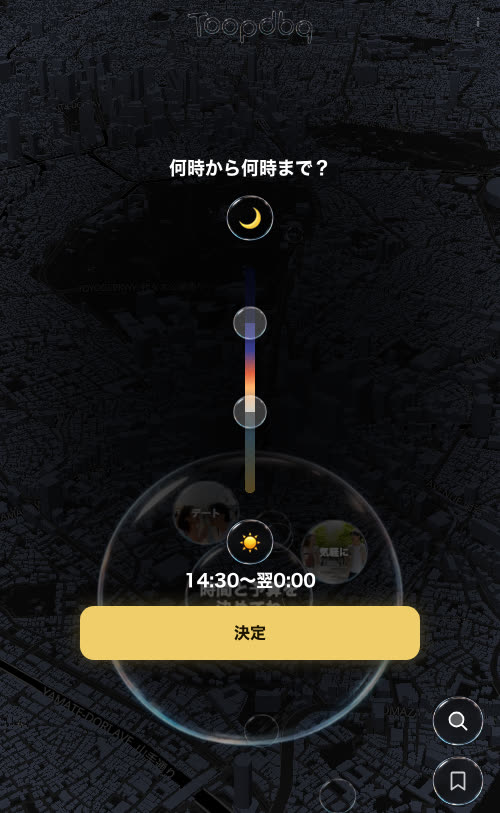
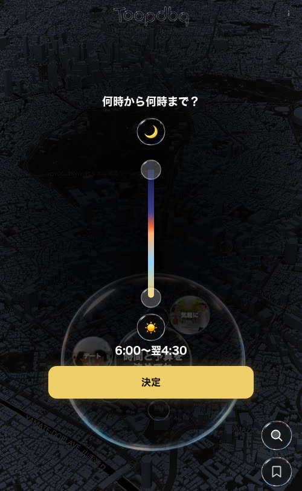
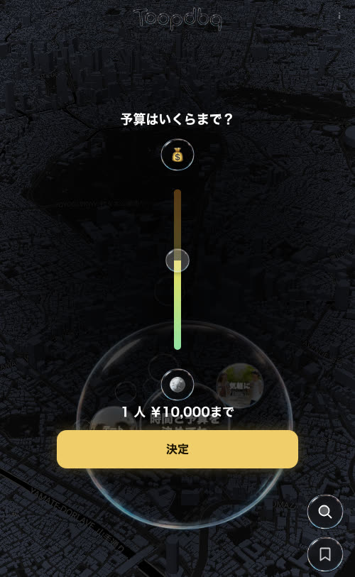
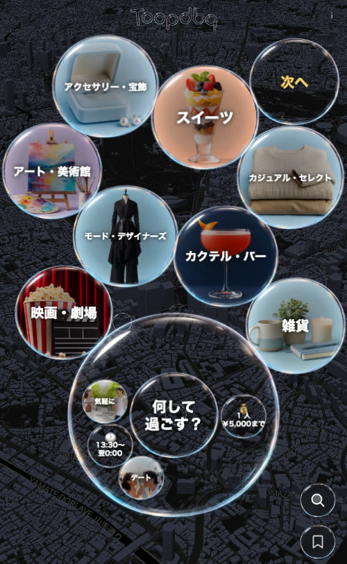

3D の街の上に漂うシャボン玉のヒアリングのうち、時間帯と予算だけは画面の中央に 1 つずつ出るダイアログで決める。
今の時間帯（縦スライダー）は直感的でない。予算はスライダーをやめ、選んだ好みの店の値段から作る 2〜5 段を縦に並べてタップで選び、ヒアリングの最後へ移す。
時間帯 3 案・予算 3 案。仕様の正は HANDOFF.md。
弱点は画像から読めることだけ書いている。4 枚目の中央の大きな玉に、決めた後の 🕐 時間帯 / 💰 予算 の小さな玉が入る（押すと弾けてダイアログが再び開く）

月 → 帯 → 太陽、泡のつまみ 2 つ、値「14:30〜翌0:00」、決定。どちらが始まりか分からない・時刻の目盛りが無い・値は下の文字でしか読めない

6:00〜翌4:30。帯の暗い部分でつまみの泡が見えにくい。「今から」「夜だけ」が 1 操作でできない

¥1,000〜¥30,000 を同じ長さに置くのでジャンルの相場と無関係な刻み。ラーメンに ¥30,000 の目盛りは要らない

泡 = 選択肢（いくつでも）。中央の大きな玉（r ≈ 150・中心 y ≈ 610）に答えの小さな玉。右下の泡ボタン 52 はスクリムより上に残る
ピンク = この依頼で設計する画面。予算を最後にするのは、好みが決まって初めて「その店の値段の分布」から段が作れるから
遊ぶ / デート / 飲み会 / お祝い / 観光
1 人 / 友達 / 恋人 / 家族 / 職場 → 人数・種類
6:00〜翌 6:00・30 分刻み・最短 60 分。始まりと終わり
何を食べたい？ / 何して過ごす？ / その後は？（いくつでも）
選んだ好みの店の値段から 2〜5 段。縦に並べてタップ
時間帯・好み・予算を渡して行程を組む
破ると実装できないもの。板を置かず、中心ほど濃いスクリムの上に「泡」の部品を直に置く
| 項目 | 値 |
|---|---|
| 画面 | 402×874（DesignSystem/preview/card.css の .phone）。status bar 62 / home indicator 34。タップ範囲 ≥ 44 |
| スクリム | radial-gradient(ellipse 70% 56% at 50% 50%, rgba(V,.9), rgba(V,.66) 50%, rgba(V,.1) 100%)、V = 0,0,0（ダーク）/ 255,255,255（ライト）。板・カードは置かない |
| 文字 | #fff / ライトは #08080b。-apple-system, "Hiragino Sans", "Noto Sans JP"、数字は tabular。見出し 18 w700・値 17 w700 |
| 泡（部品の語彙） | 🌙assets/images/bubble.webp の輪 + rgba(V,.18) + backdrop-filter: blur(6px)、中央にアイコン / 絵文字 / 数字。実装済みの寸法: 右下ボタン 52・ダイアログの絵 48・つまみ 34。白い塗りの丸・角丸の箱・罫線のリストは使わない。glass ≤ 6 形状 / 画面 |
| 決定ボタン | 幅いっぱい（≤ 352）・高さ 54・r14・#f0cf6a 地 / #1d1503 文字・16 w700・box-shadow: 0 0 18px rgba(240,207,106,.3)。最初の設定は裏を押しても閉じない / 決め直しは裏で閉じる |
| 下に見えるもの | 中央の大きな玉（r ≈ 150・中心 x 201 / y ≈ 610）と見出し「時間と予算を決めてね」（隠してよい）。右下の泡ボタン x 334–386 / y 696–748・757–809 はスクリムより上（その上に部品を置かない） |
| 時間帯 | 6:00 〜 翌 6:00・30 分刻み・最短 60 分・始まりは 23:30 まで。初期値 = 今（30 分へ切上げ）〜 24:00（23 時以降 → 翌 6:00・6 時前 → 6:00〜）。表記 14:30〜翌0:00 / en 14:30 – 0:00 +1。出力 = 分（360 … 1800）。タップだけで決められる案を最低 1 つ |
| 予算 | 行 = 2〜5 段・縦に並べてタップで 1 つ。「こだわらない」を含む。出力 = グループごとの上限 { dinner: [0, 6000], bar: [0, 3000] }（0 = 上限なし） |
| 実装 | web（React + CSS・タッチ）。input[type=range] を CSS で回した縦スライダーは Chrome で値が動かない → DOM + pointer events で作れる形に。specimen は静的 HTML + 最小の JS |
| 文言 ja / en | 何時から何時まで？ / What time? ・ 予算はいくらまで？ / What's your budget? ・ 決定 / Done ・ こだわらない / Any ・ 1 人 {amount}まで / Up to {amount} per person ・ 1 点あたり / per item。新しい文言は足してよい（2 行以内） |
値段を持つグループ = カフェ snack / 昼 lunch / 夜 dinner / 夜の店 bar / 服 wear / 靴 shoes（服・靴は 1 点あたり）。映画・カラオケ・名所は値段なし → 段に出さない。 選んだ好みに当たる店の値段をグループごとに集め、20 / 40 / 60 / 80 パーセンタイルをきりのいい額に丸める。同じ額は 1 つに → 段は 1〜4 + こだわらない。複数グループは同じ段 = 同じパーセンタイル
| 段 | 夜 イタリアン（85 店） | カフェ（319 店） |
|---|---|---|
| 20% | 〜¥3,000（18 店） | 〜¥750（59 店） |
| 40% | 〜¥4,000（36） | 〜¥1,000（133） |
| 60% | 〜¥5,000（67） | 〜¥1,250（229） |
| 80% | 〜¥6,000（81） | 〜¥1,500（290） |
| — | こだわらない（映画は値段なし） | |
| 段 | 夜 焼肉（113 店） | 夜の店 ビール（50 店） |
|---|---|---|
| 20% | 〜¥5,000（41） | 〜¥2,500（12） |
| 40% | 〜¥6,000（80） | 〜¥3,000（29） |
| 60% | （40% と同額 → 空欄か同額。Design が決める） | 〜¥3,500（37） |
| 80% | 〜¥7,000（94） | 〜¥4,000（48） |
| — | こだわらない（カラオケは値段なし） | |
| 段 | 昼 ラーメン（98 店） | カフェ スイーツ（96 店） |
|---|---|---|
| 20% | 〜¥1,000（79） | 〜¥750（18） |
| 40% | （同額） | 〜¥1,250（52） |
| 60% | （同額） | 〜¥1,500（74） |
| — | こだわらない（ラーメンは 1 段しか無い = 相場が狭い） | |
| 段 | 服 古着（418 店・1 点） | カフェ（319 店） |
|---|---|---|
| 20% | 〜¥8,000（97） | 〜¥750（59） |
| 40% | 〜¥12,000（191） | 〜¥1,000（133） |
| 60% | 〜¥16,000（255） | 〜¥1,250（229） |
| 80% | 〜¥30,000（348） | 〜¥1,500（290） |
| — | こだわらない | |
行に出す情報の候補（取捨は Design）: 段の名前（例: 気軽に / ふつう / ちょっと贅沢 / 贅沢）/ グループごとの上限額（1〜3 グループ）/ その上限までに入る店の数 / 店の写真の例（assets/sample/）
時刻の目盛りと帯の名前（朝 / 昼 / 夕 / 夜 / 深夜）。始まりと終わりの泡に時刻を内包し、どちらが始まりか一目で分かる
日の出 → 日没 → 夜の円で、範囲を弧として見せる。今の値は中央に常に読める
よくある枠（今から / 昼 / 夕方〜夜 / 夜〜深夜）の泡 + ±30 分の微調整。ドラッグ無しで決められる
1 行 = 段の名前と、グループ別の上限額（1〜3 個）。2〜5 行で崩れない
段ごとに「入る店の数」を長さで見せる。多い段 / 少ない段が分かる
各段に店の写真 2〜3 枚（assets/sample/）。相場が顔で伝わる
handoff/PlanTimeBudget/time-a.html time-b.html time-c.html / budget-a.html budget-b.html budget-c.html + 並べる gallery.html.phone の枠に 402×874。街は shots/prefs-center-bubble.jpg を背景に敷いてよい@dsCard（group="PlanTimeBudget"）を付け DesignSystem/_ds_manifest.json に登録。アセットは ../../assets/（複製しない）HANDOFF.md / brief.html / shots/ は上書きしない。最終はダウンロード可能な bundle で